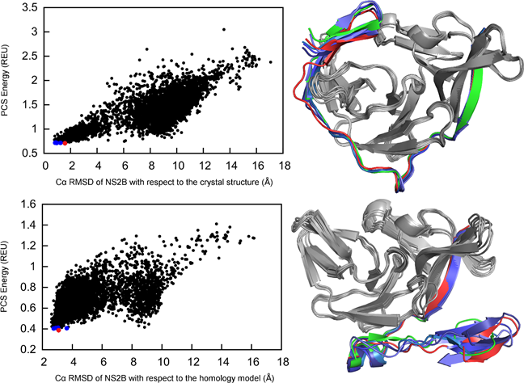

About Kala Bharath Pilla
I am currently Postdoc at Australian National university with Prof.Thomas Huber. I finished my PhD in computational structural biology, my PhD thesis titled “Protein Structure Determination by Paramagnetic NMR and Computational Hybrid Approach”. I write and develop new algorithms/software for protein structure determination from limited experimental data. Check out my publications and research for more information.
Publications
Research Articles
5. Capturing Conformational States in Proteins Using Sparse Paramagnetic NMR Data.
KB Pilla, J Koehler Leman, G Otting, T Huber.
PLoS ONE 10(5): e0127053 2015 link to open access article
4.Three-dimensional protein fold determination from backbone amide pseudocontact shifts generated by lanthanide tags at multiple site.
^H Yagi, ^KB Pilla, A Maleckis, B Graham, T Huber, G Otting. (^ co first)
Structure 21 (6), 883-890 11 2013. pdf
3.Magic angle spinning NMR structure determination of proteins from pseudocontact shifts.
J Li, KB Pilla, Q Li, Z Zhang, X Su, T Huber, J Yang.
Journal of the American Chemical Society 135 (22), 8294-8303, 11 2013. pdf
2. InPACdb Indian plant anticancer compounds database.
U Vetrivel, N Subramanian, KB Pilla.
Bioinformation 4 (2), 71 10 2009. link to open access article
1. Open discovery: An integrated live Linux platform of Bioinformatics tools
U Vetrivel, KB Pilla.
Bioinformation 3 (4), 144 7 2008. link to open access article
Book Chapter
3D Computational Modelling of Proteins Using Sparse Paramagnetic NMR Data.
KB Pilla, G Otting, T huber.
Bioinformatics , Methods in Molecular Biology, Humana. Editor: Jonathan Keith (in press)
Research
Capturing Conformational States
Understanding induced conformational changes at an atomic level is critical for drug development. We identify these conformational states using sparse experimental data from paramagnetic NMR spectroscopy. We demonstrate this using our GPS-Rosetta approach on the example of the Dengue virus protease structure which can exist in two forms, a “closed” form in the presence of an inhibitor and an “open” form without inhibitor. Our approach succeeds in the structural elucidation of both forms while the traditional computational method fails.

Capturing Conformational States in Proteins Using Sparse Paramagnetic NMR Data.
KB Pilla, J Koehler Leman, G Otting, T Huber.
PLoS ONE 10(5): e0127053 2015 link to open access article
GPS-Rosetta
Paramagnetic ions attached to proteins via chemical chelating tags can act as GPS satellites. PCS of a nuclear spin from a paramagnetic metal ion ties its location to a certain isosurface, a second PCS measured for the same nucleus from a paramagnetic ion attached at a different site restricts the spin to lie on intersecting isosurfaces. A third PCS measured from a paramagnetic ion attached at a site different from the first two would further restrict the location of the spin in space. This technique which is analogous to the method of finding location on Earth from three or more GPS satellites. This method is incorporated into the Rosetta fragment assembly framework and dramatically alters the conformational sampling dircting the search towards the native. The GPS-Rosetta algorithm works with PCS recorded in either solution or sloid state.
 Three-dimensional protein fold determination from backbone amide pseudocontact shifts generated by lanthanide tags at multiple site.
Three-dimensional protein fold determination from backbone amide pseudocontact shifts generated by lanthanide tags at multiple site.
^H Yagi, ^KB Pilla, A Maleckis, B Graham, T Huber, G Otting. (^ co first)
Structure 21 (6), 883-890 11 2013. pdf
Magic angle spinning NMR structure determination of proteins from pseudocontact shifts.
J Li, KB Pilla, Q Li, Z Zhang, X Su, T Huber, J Yang.
Journal of the American Chemical Society 135 (22), 8294-8303, 11 2013. pdf
Workspace
My dev setup.
| Linux | Editor | Github |
|---|---|---|